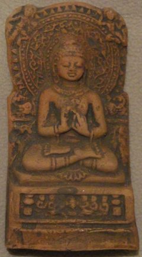
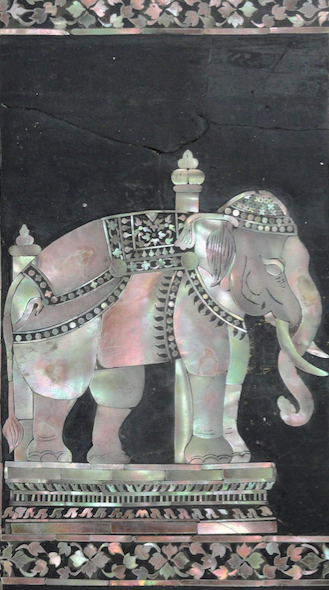
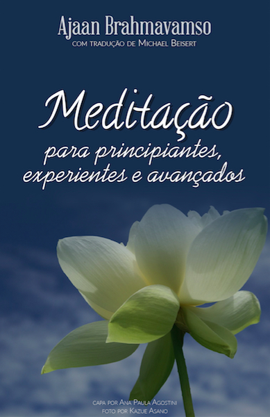

A U D I O B O O K S
Passe o mouse
na capa do audiobook
ABC do Budismo
Michael Beisert

Respostas a algumas das dúvidas mais freqüentes sobre o Budismo.
Baixe o Audiobook completo em formato compatível com Apple M4B ou em formato MP3.
Ou baixe cada capítulo em MP3: (1) O que é o Budismo?; (2) No que os Budistas (Theravada) acreditam?; (3) Os Budistas Acreditam em Deus?; (4) O Budismo e a Reencarnação; (5) O Budismo tem uma visão negativa da vida? O Budismo é niilista?; (6) O Budismo e a homossexualidade; (7) No Budismo todo desejo é ruim?; (8) Porque devo meditar?; (9) Posso confiar nos Suttas?
O que é o Budismo Theravada
Michael Beisert;
Bhikkhu Bodhi

Breve resumo sobre o que é o Budismo Theravada.
Baixe o Audiobook completo em formato compatível com Apple M4B ou em formato MP3.
Ou baixe cada capítulo em MP3: (1) O que é o Budismo Theravada; (2) A Nobreza das Verdades
Meditação o Coração do Budismo
Mestres da Tradição das Florestas da Tailândia
Ensinamentos de renomados mestres da Tradição das Florestas da Tailândia: Ajaan Chah, Ajaan Brahmavamso, Ajaan Pasanno, Ajaan Sucitto, Ajaan Chandako, que são verdadeiras jóias raras com valiosas dicas sobre o cultivo mental ensinado pelo Buda.
Baixe o Audiobook completo em formato compatível com Apple M4B ou em formato MP3.
Ou baixe cada capítulo em MP3: (1) Introdução; (2) Meditação o Coração do Budismo; (3) Contentamento; (4) Samadhi é puro Deleite; (5) O Machete Perfeito; (6) Vivendo com uma Cobra
Meditação para Principiantes, Experientes e Avançados
Ajaan Brahmavamso

"Meditação é Fácil" (Ajaan Brahm). Descubra como neste guia completo elaborado com base em livretos publicados pelo Bodhinyana Monastery e palestras de Ajaan Brahm.
Apenas disponível no Acesso ao Insight. Traduzido e editado por Michael Beisert.
Baixe o Audiobook completo em formato compatível com Apple M4B.
Ou baixe cada capítulo em MP3: (1) Prefácio do Editor e Tradutor; (2) Introdução - As Diversas Graduações da Visão Clara; (3) Contentamento; (4) O Cultivo da Alegria; (5) Os Cinco Obstáculos; (6.1) (6.2) (6.3) O Método Básico; (7) A Qualidade da Atenção Plena; (8.1) (8.2) (8.3) Os Jhanas; (9) Usando Não-eu; (10) Insight Profundo; Apêndices: (11) Você Veio Aqui para Morrer?; (12) Por Fim a Alegria.
Meditação Este é o Caminho
Ajaan Anan Akiñcano e Ajaan Dtun Thiracitto
Quatro palestras do Dhamma que abrangem os aspectos mais básicos da meditação até os estágios mais avançados da forma como é praticado na Tradição das Florestas na Tailândia enfatizando o desenvolvimento de samadhi e da sabedoria.
Baixe o Audiobook completo em formato compatível com Apple M4B.
Ou baixe cada capítulo em MP3: (1) Introdução; (2) Desenvolvendo Samadhi; (3) Samadhi para a Libertação; (4) Este é o Caminho; (5) Marananussati - Manter o Fim na Mente.
Todos Nós assediados
pelo Envelhecimento, Morte e Nascimento
Ayya Khema
Foto da Capa: Pintura na parede de um monastério nas colinas de Sagaing
nos arredores de Mandalay, Myanmar.
Muito provavelmente o título deste livro deve provocar algum tipo de rejeição, afinal ninguém quer nem pensar em velhice e muito menos morte. Mas curiosamente há poucas certezas na vida e entre elas estão justamente a velhice e a morte. Ayya Khema tem boas coisas a dizer sobre essas certezas da vida e como estar bem preparado.
Baixe o Audiobook completo em formato compatível com Apple M4B.
Ou baixe cada capítulo em MP3: (1) Introdução; (2) O Dhamma do Abençoado; (3) Aceitando a Si Mesmo; (4) Para Controlar a Própria Mente; (5) Seja Ninguém; (6) Guerra e Paz; (7) Não Dualidade; (8) Renúncia; (9) Isolamento Ideal; (10) Dukkha para Conhecimento e Visão; (11) As Nossas Tendências Subjacentes; (12) Sem Sofrimento, Imaculado e Seguro; (13) Caminho e Fruto.